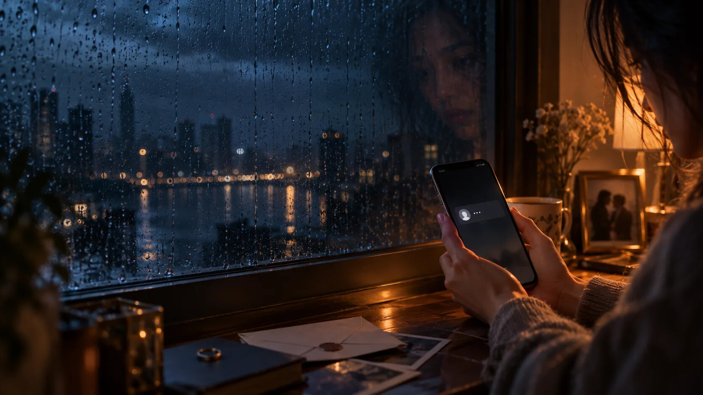
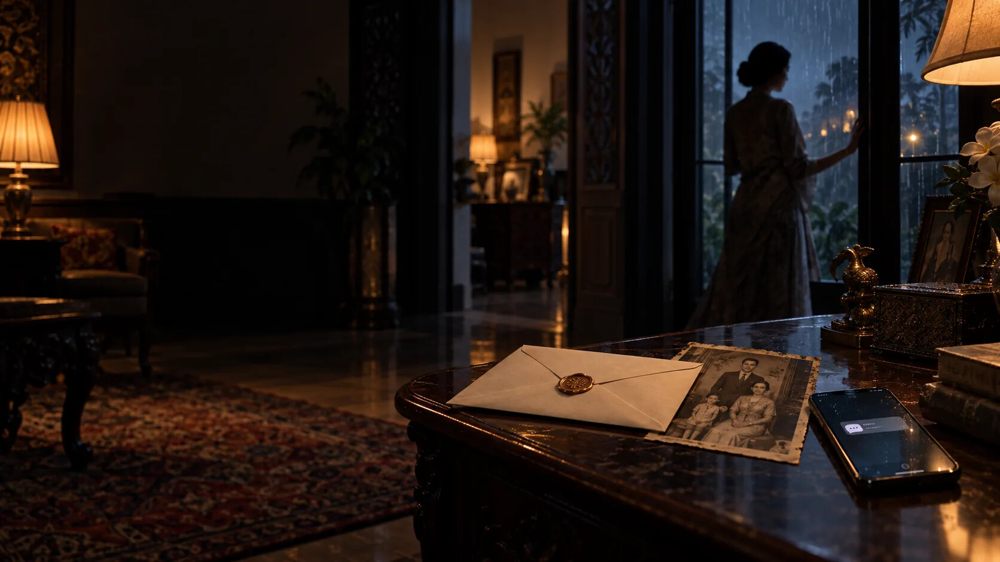
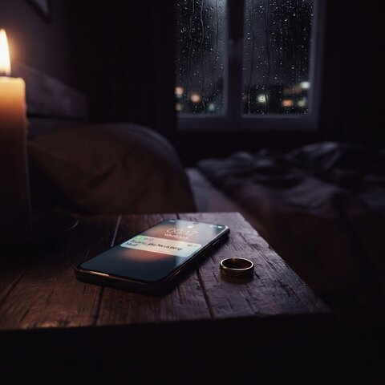
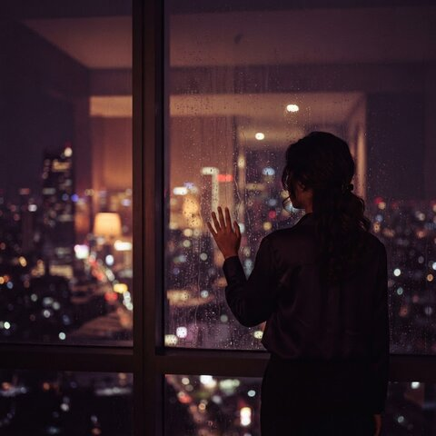
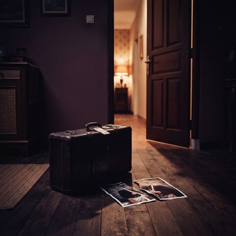
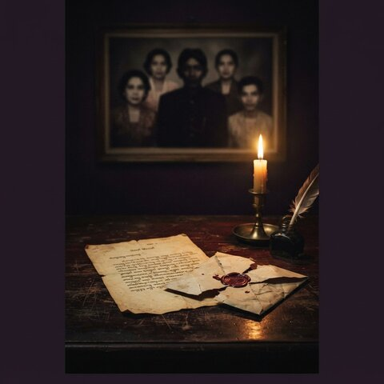
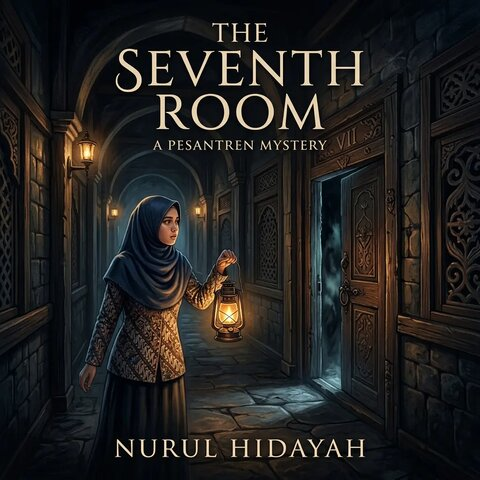
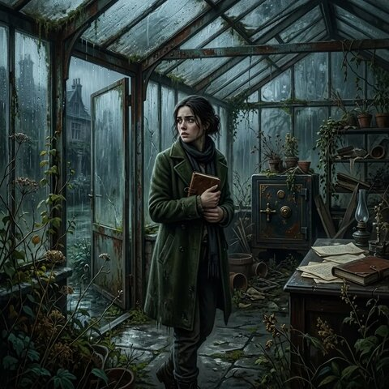

Kalau ini ceritamu, apa yang akan kamu lakukan?
Kamu bukan sekadar membaca kisah seseorang.
atau

Di sini, kamulah tokoh utamanya.
Kamu menyembunyikan sebuah surat.
Seseorang mulai mencurigaimu.
Surat itu ditemukan.
Kamu harus menjelaskan kenapa kamu berbohong.






Drama keluarga·Romansa·Misteri·Thriller
50 bab. Beberapa akhir yang berbeda.
Tergantung pilihanmu.
lakoku.biz.id